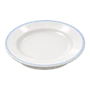
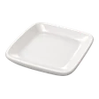
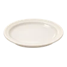
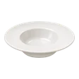
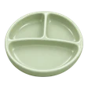
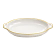
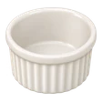

Восемь дополнительных вариантов для «Моей посуды». Размер, глубину и объём своей посуды задавай отдельно.








Для квадратной тарелки укажи сторону, для овальной или прямоугольной — наибольшую длину. Изображения не задают размер или объём автоматически.